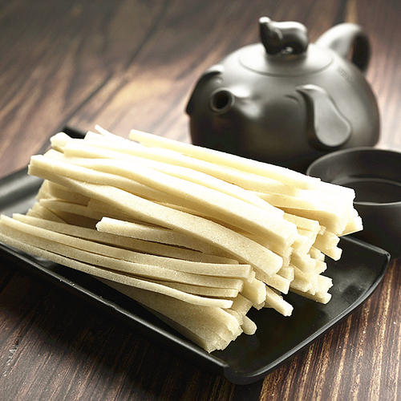

小
食
篇
上饶鸡腿
上饶鸡腿是江西省上饶地区特色小吃，使用的是上饶当地山里野鸡的鸡腿，根据传统工艺制作而成，食之骨酥肉韧，香辣开胃，是佐餐，下酒，休闲及馈赠亲友的美食佳品。


|
小 食 篇 |
上饶鸡腿 上饶鸡腿是江西省上饶地区特色小吃，使用的是上饶当地山里野鸡的鸡腿，根据传统工艺制作而成，食之骨酥肉韧，香辣开胃，是佐餐，下酒，休闲及馈赠亲友的美食佳品。 |
|
|---|---|---|
|
|  |
灯芯糕 鹰潭传统小吃——灯芯糕是江西省四大名特糕点之一，以优质糯米、白糖为主要原料，配以30多种名贵药材。外观洁白晶莹，糕条柔软，甜而不腻，香味沁人，形似灯芯。现在是当地人们节日喜庆时馈赠亲友的必备礼品。 |
|---|